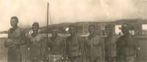
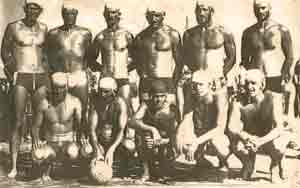

O klubu
 Vaterpolo
klub Croatia Turanj osnovan je 1949. godine,a danas ima oko 30 èlanova. Klub
se kontinuirano natjeèe u regionalnim ligama za ni¾e uzraste, a ovisno o uvjetima
i u seniorskoj konkurenciji. U sezoni 2004. oèekuje se natjecanje u kategoriji
mlaðih juniora, te u seniorskoj treæoj ligi. Zbog nedostatka zatvorenog bazena
klub djeluje samo tokom ljetnih mjeseci, kad se i odr¾avaju natjecanja regionalnih
liga u Hrvatskoj.
Vaterpolo
klub Croatia Turanj osnovan je 1949. godine,a danas ima oko 30 èlanova. Klub
se kontinuirano natjeèe u regionalnim ligama za ni¾e uzraste, a ovisno o uvjetima
i u seniorskoj konkurenciji. U sezoni 2004. oèekuje se natjecanje u kategoriji
mlaðih juniora, te u seniorskoj treæoj ligi. Zbog nedostatka zatvorenog bazena
klub djeluje samo tokom ljetnih mjeseci, kad se i odr¾avaju natjecanja regionalnih
liga u Hrvatskoj.
Trenutni djelatnici kluba su: predsjednik Ðoni Rota; potpredsjednik Nikola
Dekoviæ; u upravnom odboru: Ivan Dekoviæ, Ive Rota, Josip Santini, Krunoslav
Santini, Nado Santini; te u nadzornom odboru: Bo¹ko Santini, Damir Santini
i Ivan Santini.
Povijest kluba
Neposredno nakon drugog svjetskog rata turanjski mladiæi su oti¹li od kuæe da bi izuèili zanat ili zavr¹ili ¹kolu, i to veæinom u Zadar. Tamo su prvi put vidjeli igru koja se igrala s loptom plivajuæi u moru. Tu su igru donijeli u Turanj, igrajuæi je za vrijeme ¹kolskih praznika u mjesnoj luci. 1949. godine su na rivi nacrtali vrata i tada se u Turnju poèeo igrati vaterpolo. Prvu pravu vaterpolsku loptu u Turanj donio je iz Biograda poznati hrvatski vaterpolski djelatnik Damir Èoriæ. Prva vaterpolska vrata donesena su iz Zadra i kupljena od PK Jedinstvo za 100 tisuæa tada¹njih dinara, a prve kapice je turanjskim vaterpolistima napravila samouka krojaèica Marija Santini. To je bila prva oprema s kojom je Croatia nastupila.
U poèetku je malo tko stvarno znao igrati, pa se vi¹e igralo na snagu i pobjeðivao je onaj tko je bio fizièki jaèi. U to vrijeme su se igrale utakmice s obli¾njim klubovima iz sv. Filip i Jakova, Biograda, Zadra, Betine, I¾a i Preka. Prvu generaciju igraèa èinili su: Anðelko i Milorad Boliæ, Ive Dekoviæ (Muto), Sveto Jaèan, Davor Mandiæ, Ivo Mi¹uliæ, Emil i Ante Pedisiæ, Fedor i Zvone Piroviæ, Ka¾imir Rota, zatim Bo¾idar (Perin), Bo¾idar (Bo¾in), Davor, Drago i Pave Santini. Na èelu kluba su bili Ive Matulj i sveæenik Frane Mandiæ. Prva natjecateljska faza je potrajala do 1965. godine, kada je vaterpolska djelatnost dijelom opala, ali igranje vaterpola u Turnju nikada nije potpuno prestalo.
Croatia je natjecateljski reaktivirana ponovno poèetkom 70-ih godina. Nova uprava, veæinom sa starim èlanovima kluba, u¹la je u okupljanje sastava  koji se natjecao skupa s Bjelovarom, Osijekom, Borovom, Hvarom, ©ipanom, Rogoznicom, te splitskim Mornarom i Veteranom u tada¹njoj Republièkoj ligi. Nastupali su iskljuèivo mladiæi iz Turnja i uvrstili se u donji dio Republièke lige. S vremenom je vaterpolo postao toliko omiljen da su se u Turnju organizirali i republièki turniri za seniore, juniore i kadete. Veliki doprinos razvoju vaterpola 70-ih i 80-ih godina na podruèju tada¹nje Biogradske opæine, pa tako i u Turnju dao je poznati struènjak, profesor na zagrebaèkom Kineziolo¹kom fakultetu Zlatko ©imenc. Klub je egzistirao do sredine 80-ih godina, kada je zbog materijalnih te¹koæa djelatnost poèela jenjavati.
1994. godine klub je ponovo o¾ivljen, pri èemu je pomogao i profesionalni trener prof. Zoran Vrkiæ. On je radio sa izuzetno talentiranim igraèima roðenim 1980. do 1982. godine koji su slijedeæih nekoliko godina bili nadmoæni u kadetskoj i juniorskoj konkurenciji Biograda, Betine i Zadra. U sezoni 1997. je u seniorskoj kategoriji nastupio u treæoj ligi, a u sezonama 1998. i 1999. je uspje¹no nastupao u drugoj ligi. Od 1994. godine klub neprekinuto djeluje i natjeèe se u raznim kategorijama hrvatske vaterpolske lige.
Povodom 50. obljetnice turanjskog vaterpola u Turnju je gostovala i reprezentacija Hrvatske, i na taj naèin se pridru¾ila slavlju. Na èelu sa izbornikom Nevenom Kovaèeviæem hrvatski su reprezentativci odigrali meðusobnu utakmicu, a u igri su sudjelovali i domaæi igraèi Croatie iz Turnja.